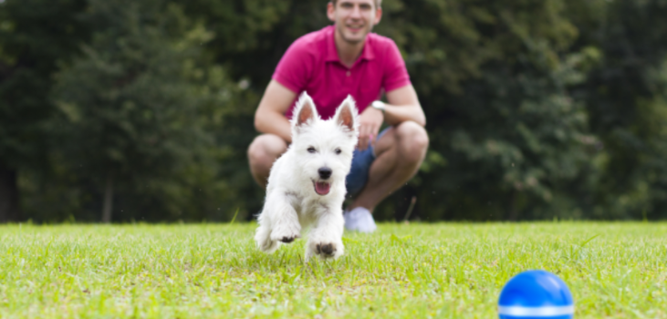
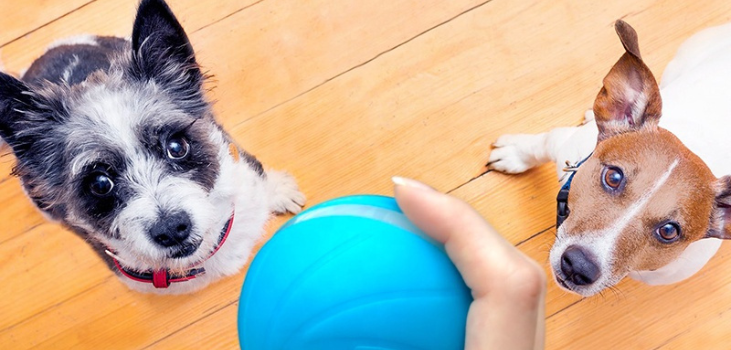
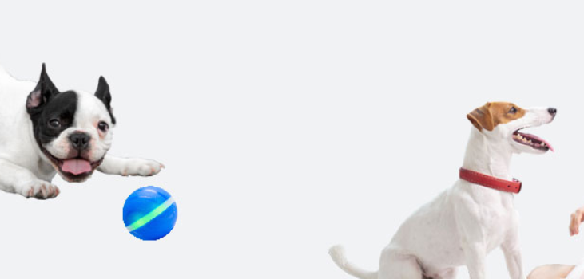
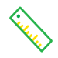
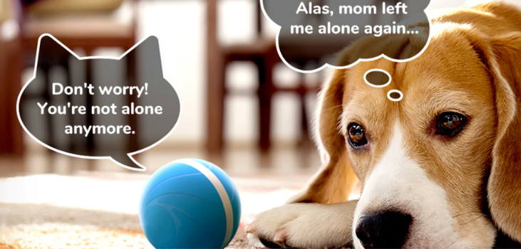

Find Out Why Thousands Of Pet Owners Are Rushing To Get This Intelligent New Toy For Their Cats And
Dogs!
Boredom and excess energy are two common reasons for undesirable behavior in pets. What happens when
you
are too busy to deal with any of these? BarxBuddy Busy Ball is the solution.
by John Edwards
01-10-2023
Advertorial

My experience with BarxBuddy Busy Ball
As an owner of two loving dogs, we know all too well the hassle of trying to figure out what
to
do with our pet while you are out of home or traveling.
As much as I like to take my dogs with me everywhere I go, sometimes this is not possible.
Going to work, social functions, even certain restaurants,
means that I will have to leave my dog home alone.
So what’s an owner to do? What I should do?
I feel like I have tried everything.
I bought them any pet toy available in the market. I even hired a dog walker to take them out once a
day.
Nothing worked for them.
Every time I came back home, the living room was a mess and they looked very unhappy.
Two weeks ago, I ran into a friend of mine in the park and had a small chat about our pets.
I explained to him how the situation was and he – Alex his name – convinced me that I should try a new
toy
called BarxBuddy Busy Ball.
And I was like: ” Ok, let’s try this one and give it a chance.”
So What is the BarxBuddy Busy Ball?

The BarxBuddy Busy Ball is a toy ball made of high-quality, tear-resistant materials
meant to withstand lots of chewing while keeping your dog entertained, engaged, and happy – all on its
own!
You don’t even need to “start it up.” The built-in motion sensors hidden inside activate anytime
your dog touches it, instantly starting a game of automated fetch.
And its smart programming technology moves the ball in a randomized pattern. This means the ball
will bounce and roll in a variety of different directions and always keep your dog guessing on
its next move.
How Does It Work?
 Twist and Open – The BarxBuddy Busy Ball easily twists open to reveal
the charging port and “on” button. Once you push the button, a green light illuminates to show the
ball is active.
Twist and Open – The BarxBuddy Busy Ball easily twists open to reveal
the charging port and “on” button. Once you push the button, a green light illuminates to show the
ball is active.
Place – From there, the Busy Ball requires no human input. Simply place the ball on
the ground and the intelligent motion sensors will activate the ball as soon as your dog touches it
with its paw or nose.
Fun Starts – The ball automatically alternates between rolling and bouncing for an
exciting game of fetch whenever your dog is feeling playful. Once your pup tires out, the Busy Ball
will go into a default “rest” mode until your dog wants to play with it again.
Recharge – When it’s time to recharge, simply plug the ball into any standard USB
charging device. A red light will show the ball is charging, and a blue light shows the ball is fully
charged.
A single hour of charge can provide up to 8 hours of nonstop entertainment for your pup.
With the BarxBuddy Busy Ball, your dog will be occupied and engaged for hours, even
when you’re not around to play with them.
Both of my dogs love this ball...

How do I know Alex and Rex (my two dogs) loved BarxBuddy Busy Ball?
Every time I come back home they are always so occupied with their new toy, they don’t even stop to
greet me as I walked into the room, their usual behavior.
Here’s the best part. And I wasn’t even expecting it…
Normally, Alex and Rex have a lot of energy! They need several rounds in the park and playing fetches
down the hallway before they are enough tired to go to sleep for the night.
But thanks to the BarxBuddy Busy Ball, Alex and Rex have worked off all of their
energy
and enjoyed a peaceful night’s sleep after just a couple of hours of play… and don’t have to do
anything!
They have BarxBuddy Busy Ball for a few weeks now, and it’s become their favorite toy
and mine too!
I was concerned that they would get bored with it, but NO! They have shown no signs of losing interest
at all in playing with this smart ball.
Oh, and it still looks as good as new. Just a few teeth marks in the exterior which is normal with all
pet toys.
I still take them out of dog walks but not as often as I used to. Only every morning before I go to
work. So these days I have more free time to take care of myself.
What makes the BarxBuddy Busy Ball the smartest dog toy you’ll ever try?
When looking at reviews there are a few features that stand out as the reason 1000s of users give this
gadget a 5-star rating:
Smart Reaction Technology
Motion-activated sensors instantly activate the ball when alerted to your dog’s presence. As soon
as your dog is ready to play, the ball starts an automatic game of fetch that will keep him or her
busy for hours at a time!
Randomized Pattern Never Repeats
The BarxBuddy Busy Ball is programmed to randomize its motion every time your dog interacts with
it. It zigs, it zags, it rolls, it bounces, always moving in a new direction and keeping your dog
on its toes.

Long-Lasting Entertainment
The BarxBuddy Busy Ball can be charged with any standard USB device. A one-hour charge provides up
to 8 hours of nonstop activity to keep your dog happy & moving around whenever you’re not around
to keep them entertained.
Built to Last
The Busy Ball is made of food-grade and nontoxic materials and is completely safe to bite and
chew. It’s tear-resistant, waterproof, easy to clean, and built to withstand endless hours of
bouncing, rolling, and romping around.
Get up to 55% BarxBuddy Busy Ball
My honest opinion?
If you want to spend less than $50 – or you’d just like to add a new pet toy to your pet’s collection
– the Barx Buddy BusyBall is an excellent choice.
Thanks to its extremely quality construction, and affordable price, this pet toy is one of the best
values in the market.
 Easy Activation:
A single nudge of the nose or paw activates the ball and keeps it moving as long as your dog is
engaged.
Easy Activation:
A single nudge of the nose or paw activates the ball and keeps it moving as long as your dog is
engaged.
Alleviates Separation Anxiety:
The ball acts as a “companion” for your furry best friend when you’re not around, and keeps him/her
occupied and entertained on-demand.
Never Gets Boring:
Automatically rolls & bounces to keep your dog chasing.Every roll and bounce is completely unique and
unpredictable to always keep your dog guessing on its next move.
Won’t Get Stuck, Ever!:
In addition to detecting your dog’s presence, the ball’s intelligent motion sensors detect obstacles
and prevent it from getting stuck in unwanted places. AKA your dog will never be left alone!
USB Rechargeable:
Plugs into any standard USB charging device. A single hour of charge lasts up to 8 hours.
Automatic Rest Mode:
As long as your dog is playing with it, the Busy Ball will remain activated (for up to 8 hours). When
your dog gets tired and stops chasing it, the ball will revert to a “rest” mode until it’s reactivated
by your dog’s touch.

Where can you order the authentic BarxBuddy Busy Ball?
BarxBuddy Busy Ball
is currently sold only online. The checkout process is very easy and fast.
Even if you are not familiar with online shopping, we guarantee that you won’t have any problems when
placing your order.
Just follow these steps:
-
Visit the official website by clicking this link.
-
Claim your’s 50% discount.
Get up to 55% BarxBuddy Busy Ball
The discount means the BarxBuddy Busy Ball is selling out rapidly right now. We highly recommend
placing your order fast before the discount ends!
Hear it from other customers too!
“‘I purchased BarxBuddy Busy Ball for Max to be able to play while I’m working and I don’t have
to break his precious little heart every time I am busy. My sister left her cat with me while
she was on a trip and she absolutely loved it too! Must-have pet toy!”
“I ordered BarxBuddy Busy Ball after borrowing one from a friend when I was invited to his
dinner. I didn’t think I would need it, but it made everything so much easier with my dog. Very
happy with my order. Nice packaging. “
“My lovely dog used to weigh many pounds. After buying this magic toy he keeps playing around
and doesn’t stop. We love long walks on the beach. I am a very happy dog mama now because our
vet said he is healthier than ever before”